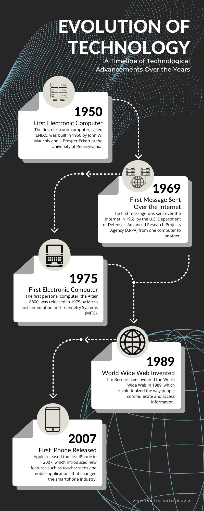

- Ce înseamnă „evoluția tehnologiei"? – Procesul prin care invențiile, descoperirile științifice și aplicațiile lor practice s-au dezvoltat continuu, schimbând modul în care oamenii muncesc, comunică, se deplasează și luptă. În ultimii 100 de ani, ritmul progresului a fost mai rapid decât în orice altă perioadă din istorie.
- Punctul de plecare: 1914 – La începutul Primului Război Mondial, majoritatea oamenilor încă foloseau caii pentru transport, iluminatul electric era un lux, iar avionul era o invenție recentă. Războiul a accelerat brusc cercetarea în multe domenii – metalurgie, chimie, comunicații, aviație.
- Războiul ca motor al progresului – Cele două Războaie Mondiale și Războiul Rece au împins statele să investească masiv în știință și tehnologie. Multe invenții civile de astăzi (radarul, computerul, internetul, GPS-ul) au fost dezvoltate inițial în scopuri militare.
- Tehnologia în prezent – Astăzi trăim într-o lume digitală: smartphone-uri, internet de mare viteză, inteligență artificială, mașini electrice, vehicule autonome și explorare spațială privată. Schimbările au loc în decenii, iar uneori chiar în câțiva ani.
- Importanța subiectului – Înțelegerea evoluției tehnologiei ne ajută să apreciem confortul actual, să anticipăm direcțiile viitoare și să fim conștienți de impactul – pozitiv sau negativ – pe care invențiile îl au asupra societății și mediului.
